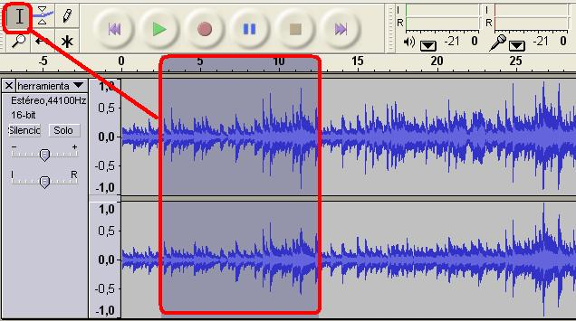

2.1. Trabajando en nuestro proyecto
1. Entra en la página de jamendo y descarga una canción. La razón es que estas canciones son libres y no tenemos el problema de los conocidos derechos de autor. En mi caso he descargado la canción ladrón de amor.
2. Importa la canción hacia el Audacity. Abre el programa Audacity (Aplicaciones / Sonido y Video / Audacity) y en fichero (file) / Importar / audio selecciona la canción que hemos descargado u otra de la que dispongas para trabajar con ella.
Podrías abrir, desde la carpeta contenedora de la canción, con botón dercho / Abrir con / Audacity.
3. Utilizando los botones de control reproduce la canción, haz una pausa y detener la reprodución. Haz clic en el botón de grabar y habla, mientras se reproduce la canción. Detener el proceso y reproduce y te encuentras que tu voz ha sido grabada en la pista inferior junto con el sonido que de la canción que se reproduce.
4. Herramientas de Selección. Utilizando la herramienta de selección selecciona unos segundos de la canción. Utilizando el botón de reproducir, observa como sólo se reproduce esa zona de la pista.
5. Utiliza la herramienta envolvente para modificar la variación del volumen (simulando una entrada fade-in o salida fade-out de una canción). Reproduce la canción desde unos segundos antes de la aplicación del envolvente y unos segundos posteriores. De acuerdo a como hayas modificado la amplitud el sonido será más o menos intenso al sonido original.
6. Utilizando la herramienta de desplazamiento o traslado en el la línea de tiempo deja unos segundos en blanco o vacíos al comienzo de la canción. Al reproducir toda la canción, observa que durante unos segundos es silencio.
7. Utilizando la herramienta zoom (a) (lupa) aumenta la línea de tiempo hasta que aparezcan unos puntos azules. Ahora puedes utilizar la herramienta dibujo (b) para modificar el sonido de la onda original del sonido. Recuerda que la modificación es un momento en el tiempo muy corto y el sonido puede ser poco perceptible.
8. La herramienta modo multi-herramienta permite utilizar, de acorde a la posición del ratón dentro de la línea de tiempo, cualesquiera del resto de las herramientas de selección explicadas. Comprueba su uso.
9. Reproduce, en la totalidad, la canción con los cambios realizados.
10. Guarda el proyecto actual como proyecto1.aup Esto nos permitirá continuar editando nuestro proyecto en el resto de los apartados. Entra en Fichero (file ) / Guardar proyecto como (save project com)
Indica el nombre del proyecto, la carpeta del usuaario enla que deseamos guardarla y aceptamos.
Jo.R.C.A. 2004 - 2011

Edición de Audio y Video con Software Libre by José Ramón Cerdeira Alonso is licensed under a Creative Commons Reconocimiento-No comercial-Compartir bajo la misma licencia 3.0 España License